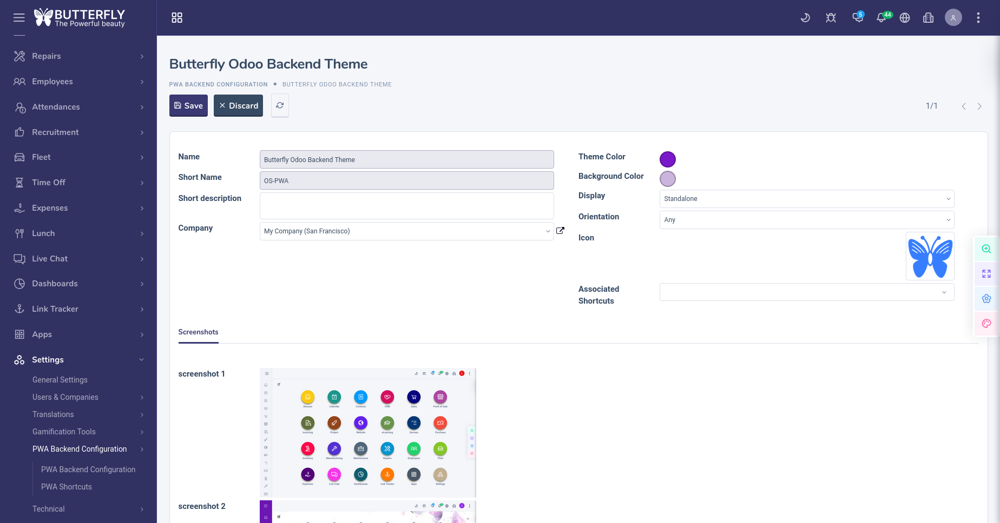
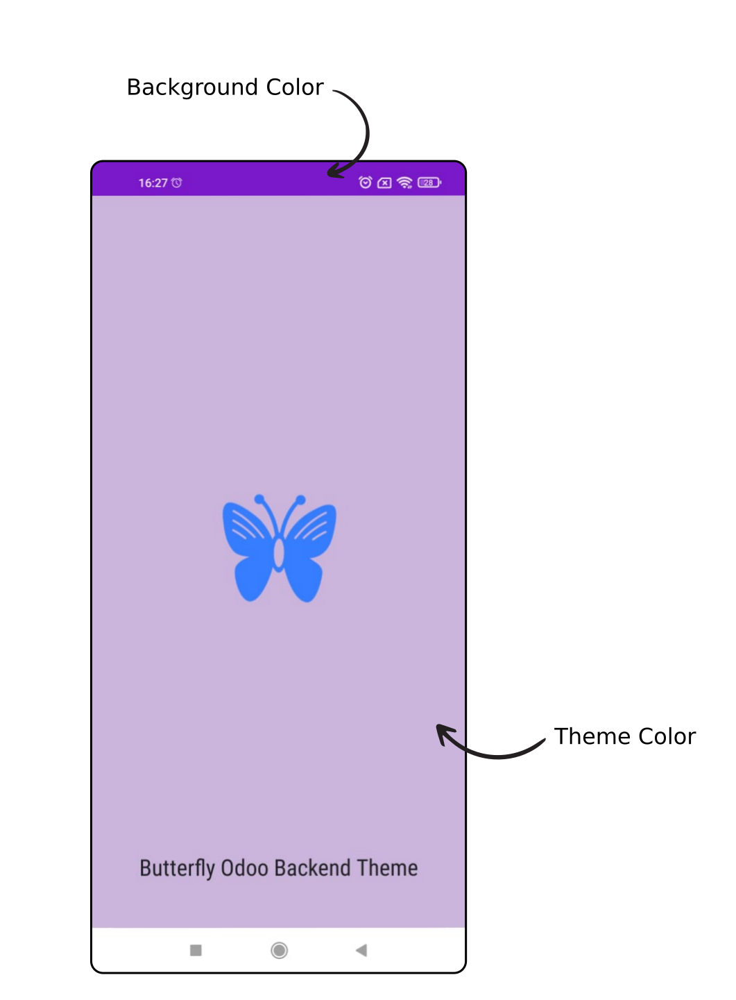

PWA Backend With Customization
This module let you customize your PWA as you need
You can configure:
- Name
- Short Name
- Description
- Theme Color
- Background Color
- Display
- Display Override
- Orientation
- Icons
- Screenshots
- Shortcuts

Customize your app's theme and background colors
When building Progressive Web Apps (PWAs), it's important to not only consider the appearance of your app's content, but also the way the app appears on the user's device once the app is installed.
This app allow you to customize the window in which your app appears is by using the theme_color and background_color

Define your app icons
Progressive Web Apps (PWAs) can be installed on devices just like other apps. Once a PWA is installed, its app icon appears on the device's home screen, dock, taskbar, or any other place where operating system native apps normally appear.
For example, on Windows, the taskbar can contain icons for both native and PWA apps side by side
Most users recognize applications by their icons. Icons appear in many places through the operating system, including the home screen, taskbar, app launcher, or setting panels.
This module allows you to set 8 sizes of icons and just entering one icon : it will generate other ones, do not bother yourself.
Define your screenshots
In this module, It's possible to define screenshots that show up when people install your progressive web app.
make PWAs feel more "app-like" and give users an idea of included app features.
Saving Time with Shortcuts
App shortcuts help users quickly start common or recommended tasks within your web app. Easy access to those tasks from anywhere the app icon is displayed will enhance users' productivity as well as increase their engagement with the web app.
The app shortcuts menu is invoked by right-clicking the app icon in the taskbar (Windows) or dock (macOS) on the user's desktop, or touch & holding the app's launcher icon on Android.
This module allows you to enter several shortcuts and customize their name, url, icons etc ...
SSL required if you are online. If you are running odoo on the localhost (http://localhost) then SSL it's not required.
 Progressive Web Application (PWA)
Progressive Web Application (PWA)